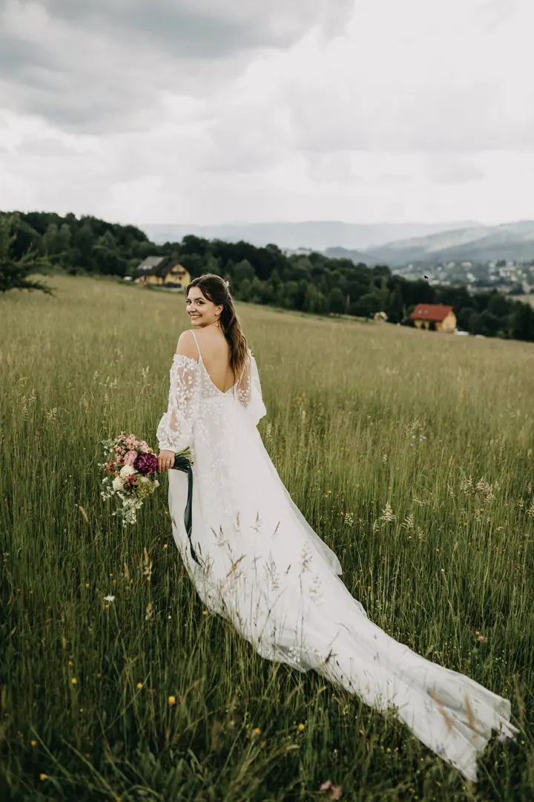
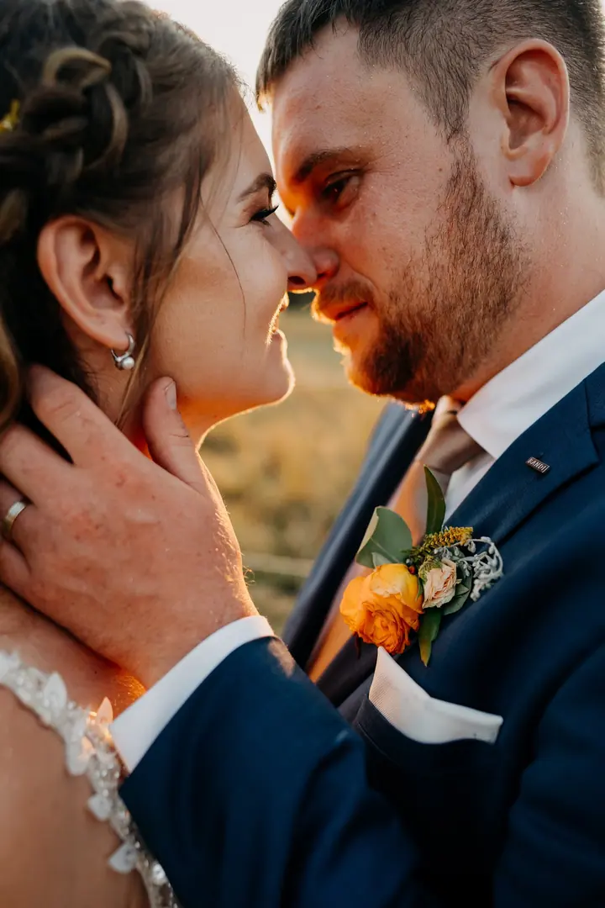
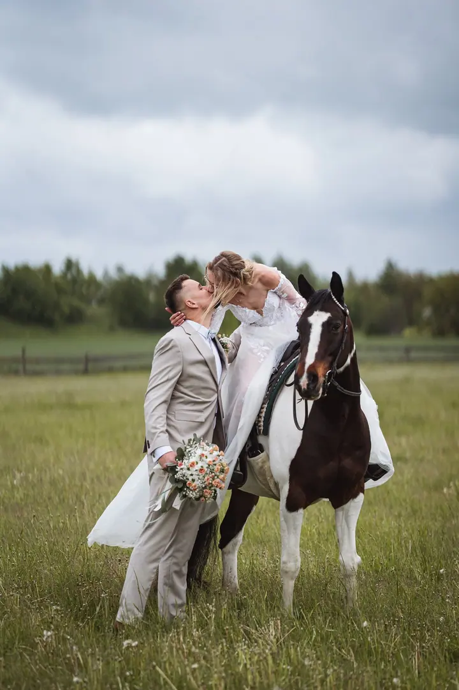

jedna
Svatby
Na svatbě se snažím zapadnout mezi hosty a nerušeně fotit vaše momenty s rodinou. Fotky mají teplé tóny, živé barvy a spoustu detailů.

Svatební a lifestyle fotografka · Ostrava, celá ČR, Evropa

Jmenuji se Vendula Molinová a jsem svatební a lifestyle fotografka z Ostravy. Na svatbách se snažím zapadnout mezi hosty a nerušeně fotit pravou atmosféru vašeho dne. Moje fotky poznáte podle teplých tónů a živých barev.
Více o mněCo fotím
jedna
Na svatbě se snažím zapadnout mezi hosty a nerušeně fotit vaše momenty s rodinou. Fotky mají teplé tóny, živé barvy a spoustu detailů.
Lifestyle a portrétní focení ve stejném duchu jako svatby. Přirozeně, v teplých tónech a živých barvách.
Pravá atmosféra, emoce a reálné momenty na celý život.


Za objektivem
Já jsem Vendy, vítejte! Miluju život a fotografování k němu neodmyslitelně patří. Když zrovna nefotím, pracuji v nemocnici, cestuju, čtu, sportuju nebo chodím po horách se svým ovčákem Archibaldem.
Na svatbách mě baví hlavně atmosféra. Pravé emoce a reálné momenty tvoří fotky, které vám i po letech připomenou, jak jste se ten den cítili. Proto se držím spíš v pozadí a nechávám den plynout po vašem.
Výjezdní místo mám v Ostravě, ale fotím po celé ČR i v Evropě, vzdálenost pro mě není překážkou. Klientům se vždycky snažím vyjít maximálně vstříc a často se z nich stávají přátelé.
Vendula
Napište mi a domluvíme se na podrobnostech. Termín je závazně zamluvený po uhrazení zálohy 5 000 Kč.
Doporučuji se před svatbou potkat. Když to nejde, zavoláme si přes videohovor.
Zapadnu mezi hosty a fotím nerušeně, ať vám žádný důležitý moment nechybí. Za slunce i za deště.
Hned den po svatbě vám pošlu zhruba 30 upravených ukázek. Celou galerii dostanete nejpozději do 4 týdnů.
Portfolio
Otázky
Čím dřív, tím líp. Některé termíny jsou plné i rok a půl dopředu, většinu ale rezervuji rok až půl roku před svatbou.
Každé počasí má své kouzlo, půjdu s vámi na slunce i do deště. Nakonec stačí, aby chvíli nepršelo na obřad a pak chvíli na focení.
Fotky upravuji nejpozději do 4 týdnů. Hned první den po svatbě vám pošlu zhruba 30 upravených ukázek, které můžete rovnou použít.
Znám spoustu fotografů, takže bych vám na svatbu zařídila náhradu.

Napište pár vět o tom, co si představujete. · +420 608 541 238